graphty logo, round 2
Eight options from four directions, ranked. Every mark is hand-built SVG from simple geometry; no image generation was used. Every family keeps the parent mark in every child with one change, and every lockup is "graphty" plus the package name in a second typeface.
Ranking and recommendation
| Rank | Option | In one line |
|---|---|---|
| 1 | 2A g-graph zigzag | Your favorite idea from A, now with a family where every child is the parent g plus one well-chosen change. |
| 2 | 2B axis | Carries G, C's depth and F's separation in one mark; the clearest 16 px of the round. |
| 3 | 2C separated node, in front | Tightest family link, but the package changes are stock icons and the graph reads as a kite. |
| 4 | 2D depth pyramid | Best 3D at large sizes; a paper plane at 32 px and a smudge at 16 px. |
| 5 | 2E triangle | Simple, but reads as a delta or an A, and the children crowd its edges. |
| 6 | 2F pulled out | Good story, but the graph reads as an R or a bow-tie, and it is flat. |
| 7 | 2G g-graph classic | Reads as an 8 with a flag; 2A does the same job better. |
| 8 | 2H ring-g | Too busy: a robot or a balloon before a g. |
Recommendation: take 2A and 2B into round 3 as the two finalists. 2A is the more distinctive brand (a name you can see); 2B is the better icon and the only one that says 3D at 16 px. Round 3 should fix each one's weak children: 2A's cytoscape-extensions and graph-samples; 2B's layout ring and graph-samples. For color, keep indigo + amber with a darker amber on light backgrounds, and look hard at graphite + magenta as the alternative: it gives the strongest focus node at 16 px and no one in the field uses it.
2A g-graph, zigzag rank 1 of 8
Round 1 A (graph-g)
Idea. A two-storey g drawn as a small graph: the bowl and the loop are ring nodes, the neck and the ear are edges, and the ear ends in the amber focus node. The loop swings down-left and the ear flicks right, so it is a slanted g, not a ring on a stem.
What changed since round 1. You liked A's g-and-graph as one idea; the children failed because the yellow circle stopped meaning anything and the icons did not hang off the parent. Now every child is the exact parent g with one change, and amber always means the focus node (in algorithms the route starts from it). The female-symbol and key readings are gone: no ring sits on a vertical stem.


Family sheet: all 11 packages
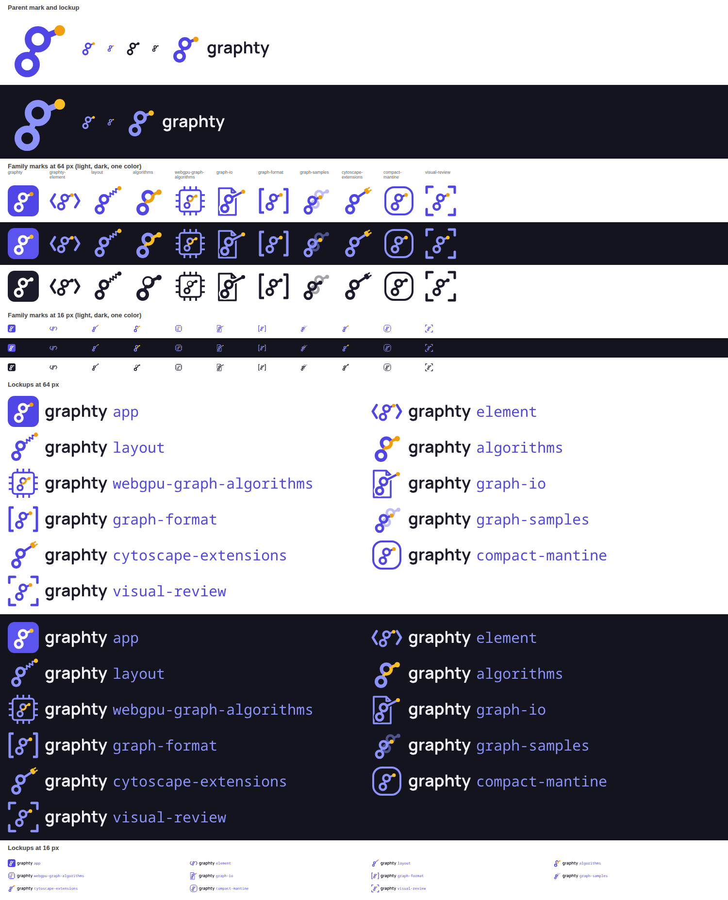
Director's notes
- Best family of the round. Each child is unmistakably the parent, and the package changes are the most thought through: layout turns the ear edge into a spring (force layout), algorithms lights a route from the focus node (clearly not a layout), graph-io pushes the edge out through a page, graph-format is [g] (flat arrays).
- At 16 px layout, algorithms, graph-samples and cytoscape-extensions mostly fall back to the parent g. Acceptable: a favicon is the parent's job; the children carry their change from 24 px up.
- Weakest children: cytoscape-extensions (a small plug on the ear, invisible below 32 px) and graph-samples (a ghost copy reads as motion blur).
- No 3D. If depth is a must-have, this direction does not carry it.
- Craft fix: the element lockup read 'graphty graphty-element'; it now reads 'graphty element' like every other option.
2B simple-graph, axis rank 2 of 8
Round 1 G (axis-node), with C's depth and F's separated node
Idea. An amber hub at a cube corner with three edges along the x, y and z axes. Nodes shrink as they recede, and the amber node floats in front with a clean gap cut out of the edges behind it.
What changed since round 1. G was your simplest-graph contender; it now also carries C's depth (node size falls off along z) and F's separation (the gap around the hub), the three things you liked, in one mark. Child lockups are 'graphty' plus the package name in Space Mono, as C did.
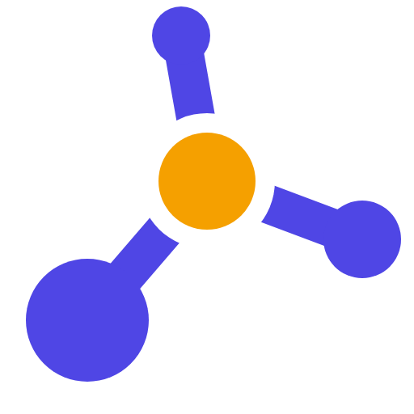
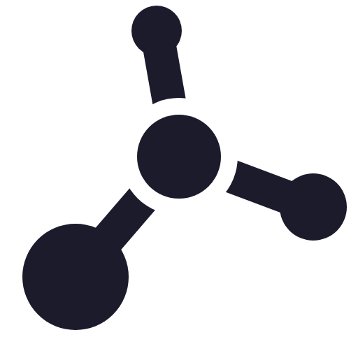
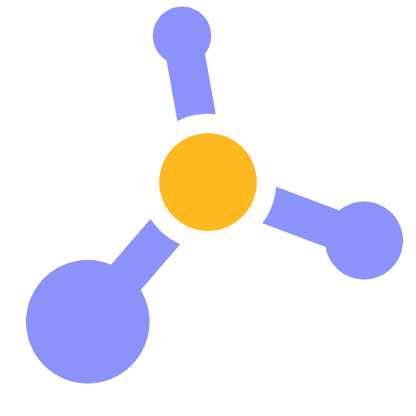
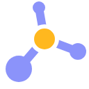
Family sheet: all 11 packages
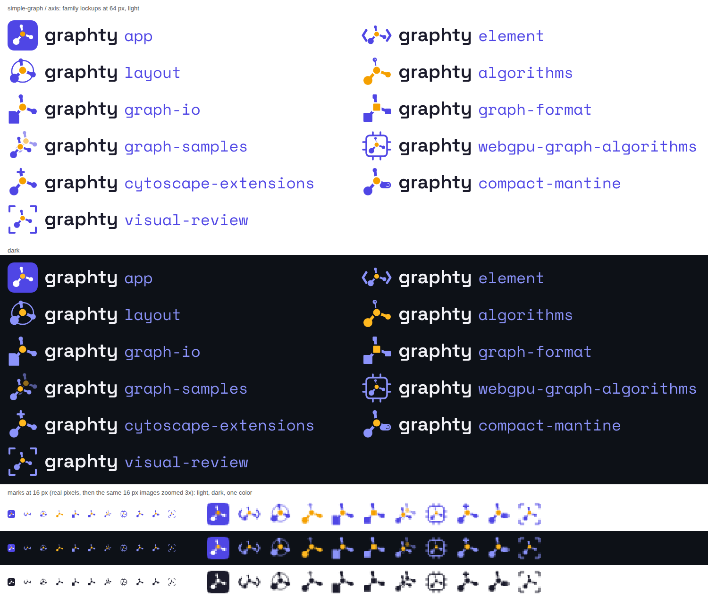
Director's notes
- The clearest parent mark at 16 px, in color, in one color and on dark. Reads as a graph and as 3D.
- The family has the most changes that survive at 16 px, because the changes are in the shapes: graph-format turns nodes into square cells, algorithms makes the off-route node hollow, graph-io turns a node into a page.
- Weak children: layout's ring reads as a target or a radiation sign at 16 px; graph-samples (two overlapping graphs) is a blob; the element and chip frames shrink the graph to about 10 px.
- Risk: three spokes from a hub can read as a generic 'share' or molecule icon; the gap is what makes it ownable, so keep it generous.
2C separated node, in front rank 3 of 8
Round 1 F (perspective)
Idea. Two triangles sharing an edge, nodes shrinking toward the back. The big amber near node sits in front of the graph and its gap bites into the hub behind it, so the separation reads as depth.
What changed since round 1. F's separated node was your detail; now it is the only thing that changes across the family, so the parent graph is untouched in every child and the connection needs no leap.
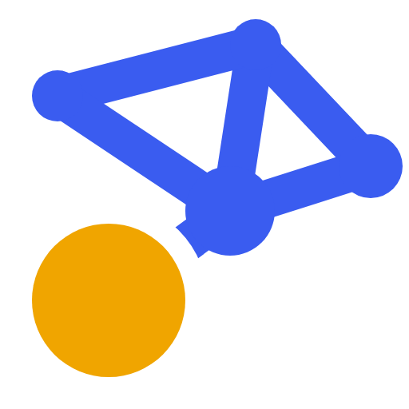
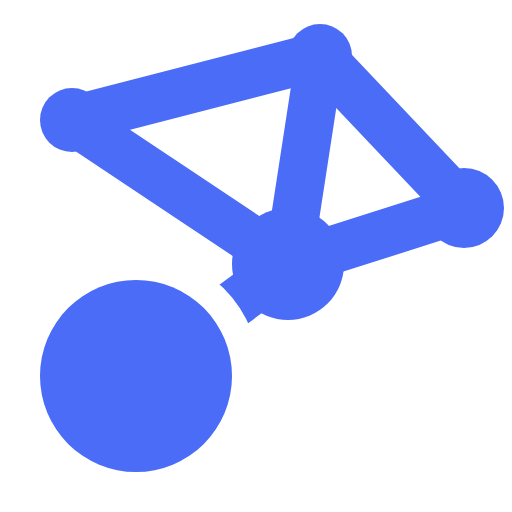
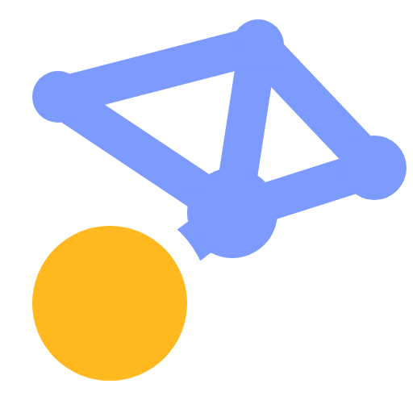
Family sheet: all 11 packages
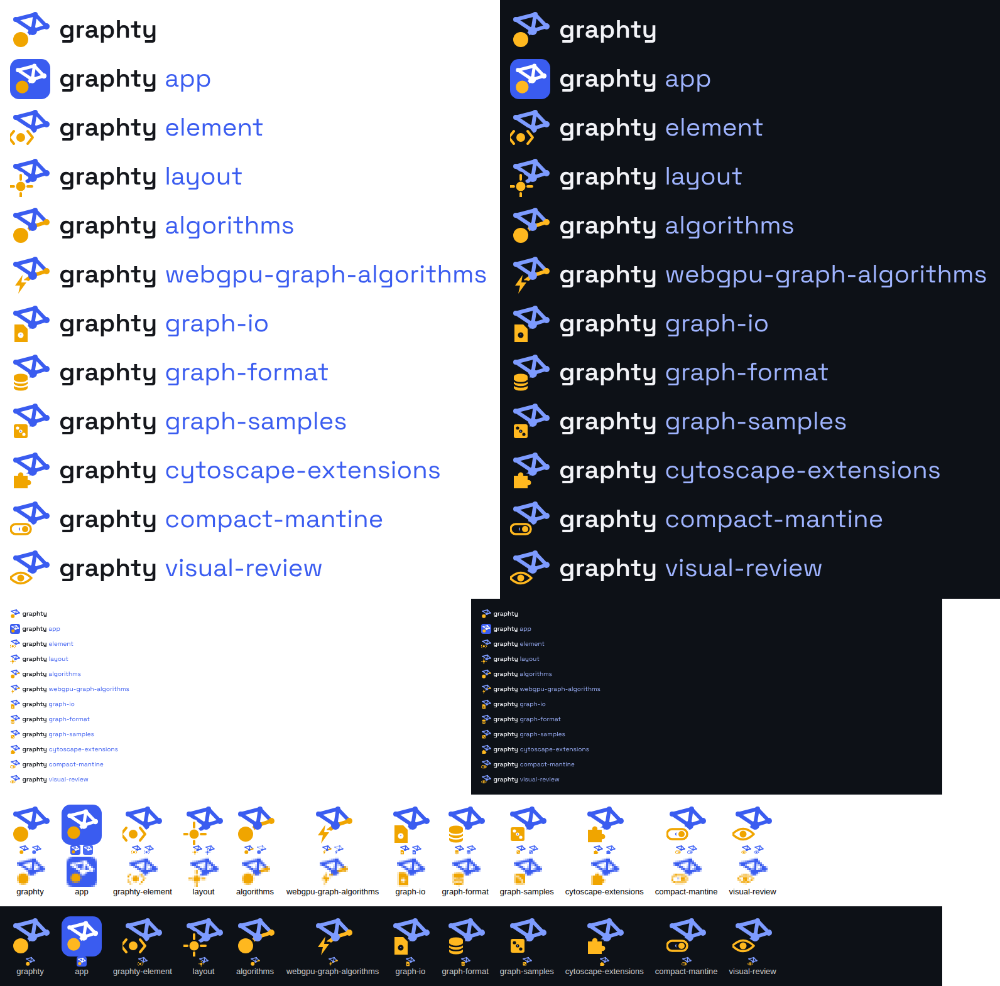
Director's notes
- The strongest parent-to-child connection of the round: the graph never changes.
- The weakest package ideas: the node becomes a stock icon (die, puzzle piece, database cylinder, eye, lightning bolt). They are literal but generic, and at 16 px every child looks like the parent.
- The graph reads as a kite or a paper plane.
2D depth, pyramid rank 4 of 8
Round 1 C (depth)
Idea. A four-node tetrahedron from a real 3D projection: nodes shrink and lighten with distance, edges taper, and the amber near node is cut free by a thin gap.
What changed since round 1. Keeps C's depth, drops the circle-line frame you found too weak, and makes every child the full parent with one change.
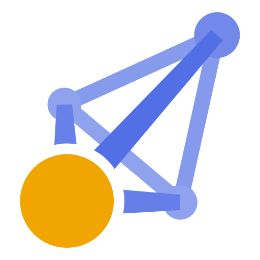
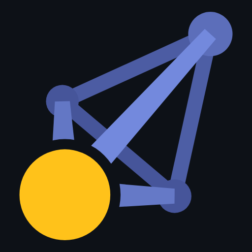
Family sheet: all 11 packages
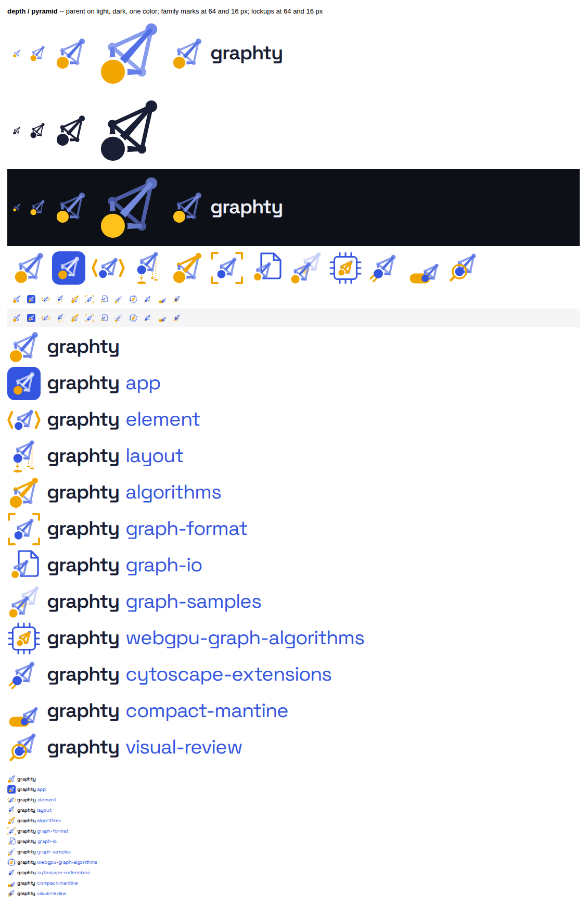
Director's notes
- The most convincingly 3D mark of the round at 128 px and up.
- At 32 px and below it reads as a paper plane or a sail, and at 16 px it is a yellow dot with a blue smudge; the one-color 16 px is a blob.
- Layout's floor shadows and the cytoscape prongs vanish at 16 px. Graph-format as viewfinder corners collides with visual-review's idea in the other options.
2E simple-graph, triangle rank 5 of 8
Round 1 G, simplified
Idea. The smallest cycle, a triangle, with the amber near node floating in front.
What changed since round 1. Pushes G toward the simplest possible graph, per your note that H was too complex.
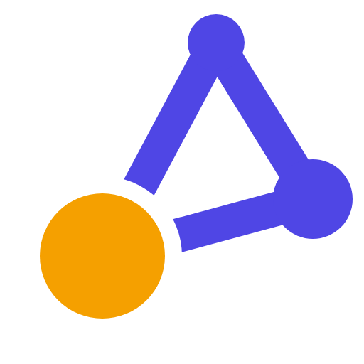
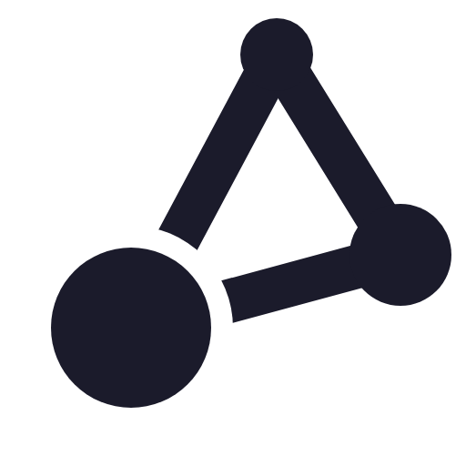
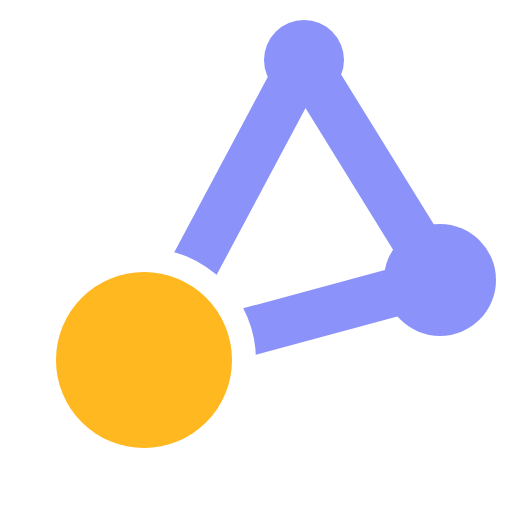
Family sheet: all 11 packages
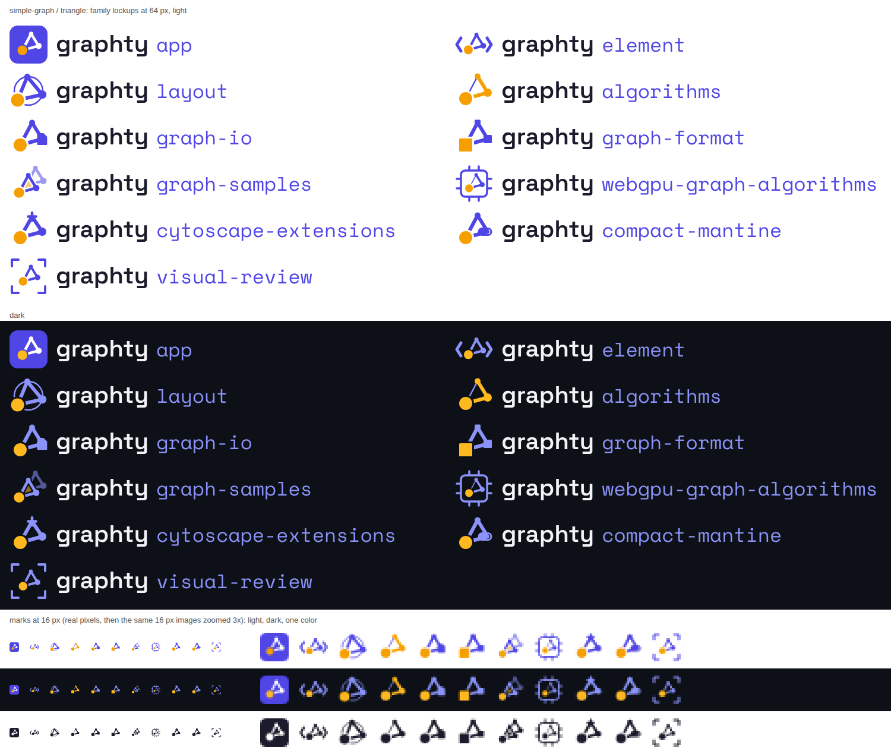
Director's notes
- Reads at 16 px, but as a delta or the letter A as often as a graph.
- The graph-io page, the compact-mantine switch and the cytoscape plus all crowd onto the triangle's edges.
2F separated node, pulled out rank 6 of 8
Round 1 F (perspective), flat
Idea. A flat four-node graph with a diagonal; one edge reaches toward the amber node and stops short, as if a reader had just dragged it out.
What changed since round 1. The same family system as 2C, without depth, and with JetBrains Mono for the package name as a font alternative.
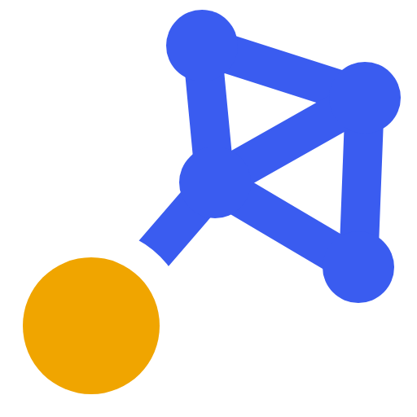
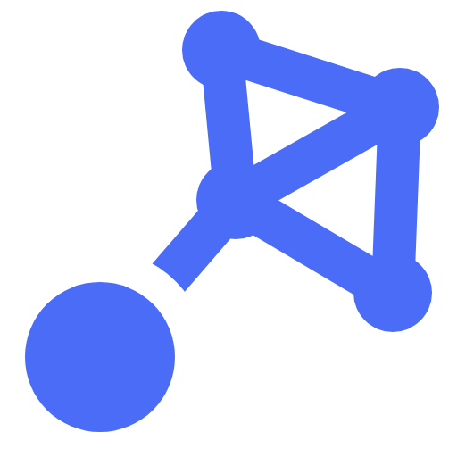
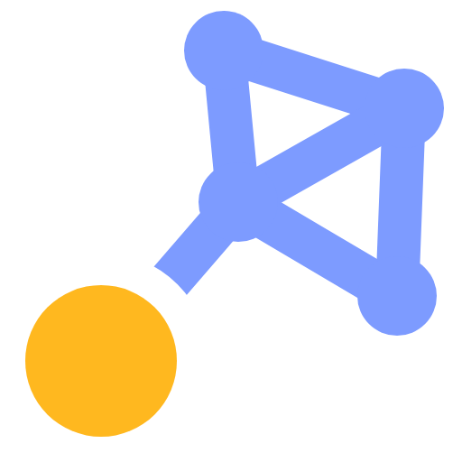
Family sheet: all 11 packages
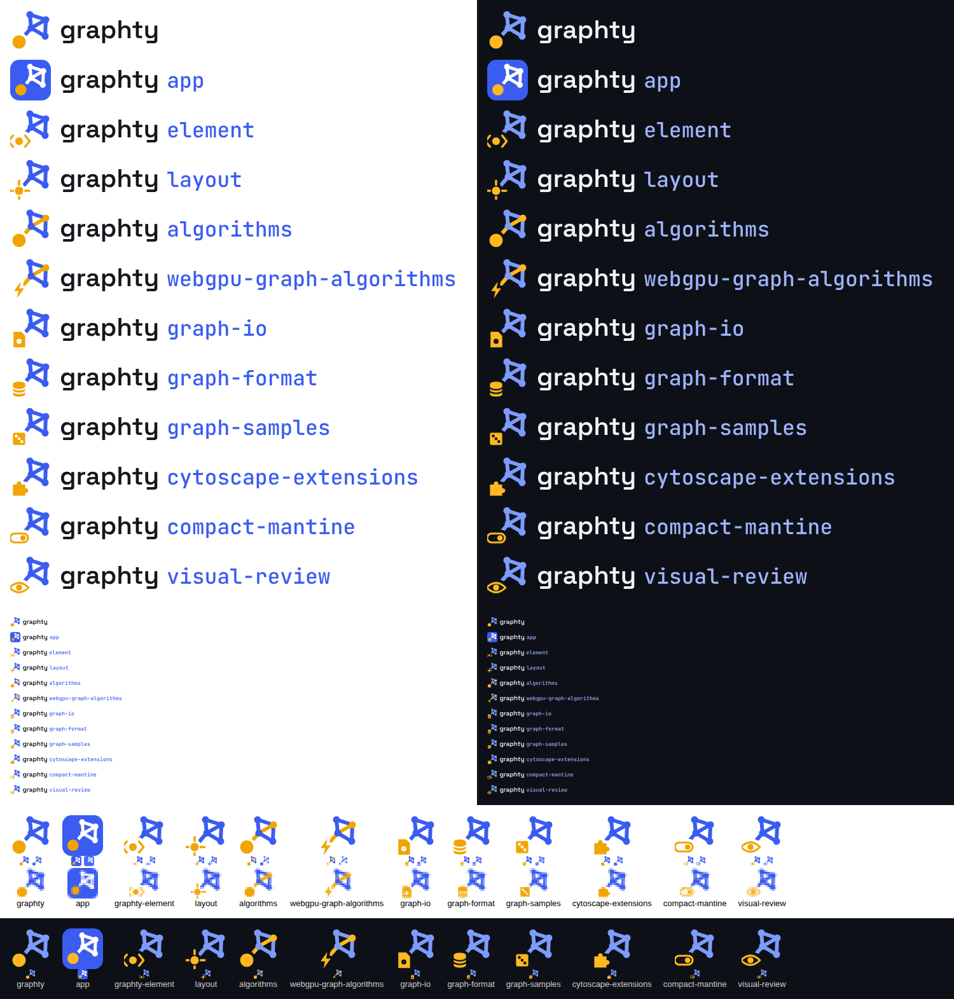
Director's notes
- The 'just dragged out' story is good, but the graph reads as the letter R or a bow-tie, and it gives up the 3D you wanted as a differentiator.
2G g-graph, classic rank 7 of 8
Round 1 A (graph-g)
Idea. An upright book-face g: a small bowl over a larger loop, with the amber ear.
What changed since round 1. Swaps round 1's big-ring-over-small sizes to remove the female-symbol reading.
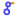
Family sheet: all 11 packages
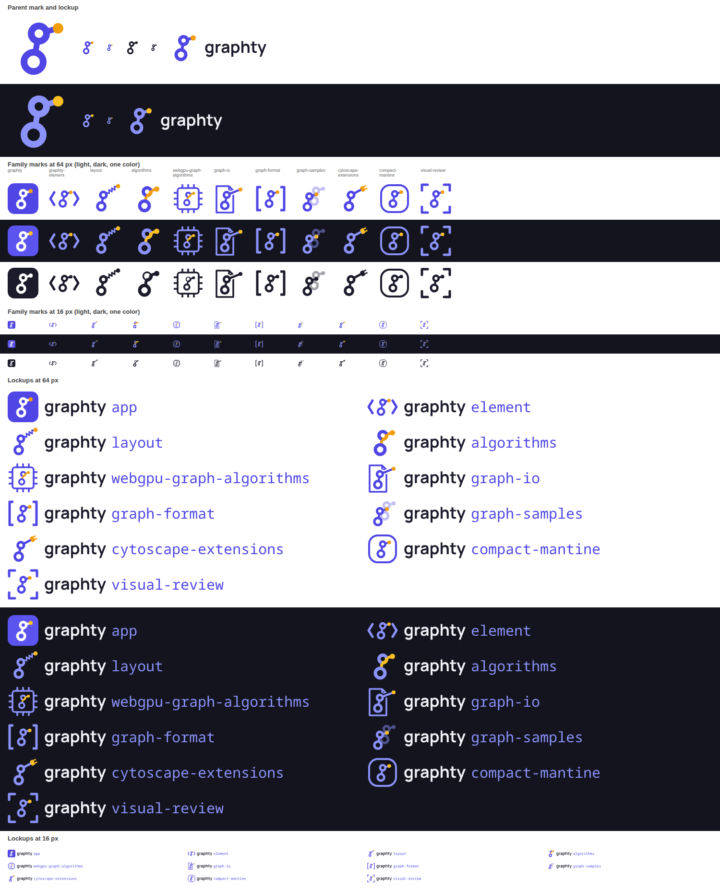
Director's notes
- At 16 px it reads as the digit 8 with a flag. 2A does the same job better; keep 2A, drop this.
- Craft fix: element lockup now reads 'graphty element'.
2H depth, ring-g rank 8 of 8
Round 1 C (depth) plus A's g
Idea. Six nodes on a tilted ring form the bowl of a g; the stem swings toward the viewer and ends in the big amber node.
What changed since round 1. Tries to merge A's g with C's depth.
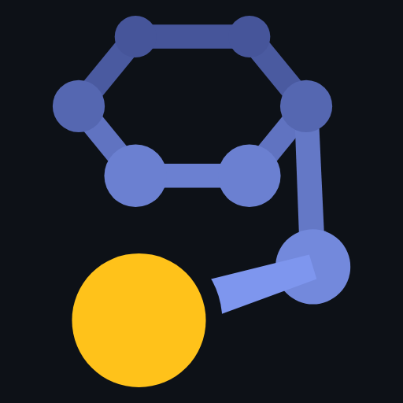
Family sheet: all 11 packages
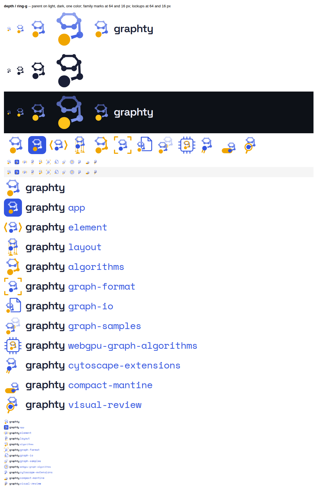
Director's notes
- Too busy: six nodes in a few pixels. It reads as a robot, a lantern or a hot-air balloon before it reads as a g or a graph. Same defect you named in H.
Palettes
Five palettes on the top two marks. Text (ink, primary) needs 4.5:1; the accent node is a graphic and needs 3:1. Values in red fail. Your WebAuthn logo is #3423a6 blurple with #f18805 orange, for reference.
Indigo + amber (refined)
light: #1b1b2b #4f46e5 #f5a000 dark: #f2f2f7 #8b93fa #ffb81f
Contrast on white: ink 16.96, primary 6.29, accent 2.12 on #111: ink 16.92, primary 6.88, accent 10.91
Kin to your WebAuthn blurple and orange, but bluer and yellower. Warm on cool; no graph tool uses indigo. Amber fails 3:1 on white: use about #c77d00 on light backgrounds if chosen.
2A zigzag (top), 2B axis (bottom): mark, lockup and the algorithms child, on light and dark.


Deep teal + coral
light: #10272b #0b6b70 #ec5a44 dark: #eef5f5 #5fd0c8 #ff8f7d
Contrast on white: ink 15.59, primary 6.27, accent 3.44 on #111: ink 17.10, primary 10.20, accent 8.52
Calm lab-notebook teal with a warm signal; darker than Graphistry's teal, pinker than the Cytoscape and D3 oranges.
2A zigzag (top), 2B axis (bottom): mark, lockup and the algorithms child, on light and dark.


Ink + electric lime
light: #14161f #2a3045 #8fbf00 dark: #f2f3f7 #c9cfe0 #c4f23a
Contrast on white: ink 18.04, primary 13.07, accent 2.18 on #111: ink 17.03, primary 12.13, accent 14.49
Near-black reads as a precise instrument; nobody in the field uses lime. Lime fails 3:1 on white, and it is the coldest option.
2A zigzag (top), 2B axis (bottom): mark, lockup and the algorithms child, on light and dark.


Graphite + magenta
light: #1c1d22 #3a3f4b #d61f69 dark: #f2f2f4 #c3c8d3 #ff5c9a
Contrast on white: ink 16.82, primary 10.54, accent 4.93 on #111: ink 16.89, primary 11.26, accent 6.52
Sober graphite with one confident node; Cytoscape, Neo4j, Gephi, Graphistry and D3 all avoid magenta. Strongest focus node at 16 px.
2A zigzag (top), 2B axis (bottom): mark, lockup and the algorithms child, on light and dark.


Two-blue depth
light: #0f1733 #1e3a8a #1d93cc dark: #eef2ff #7ea2ff #7dd3fc
Contrast on white: ink 17.64, primary 10.36, accent 3.44 on #111: ink 16.89, primary 7.64, accent 11.33
Navy far, sky near: the color itself says 3D, which suits the depth story. Close to Neo4j's blue territory.
2A zigzag (top), 2B axis (bottom): mark, lockup and the algorithms child, on light and dark.